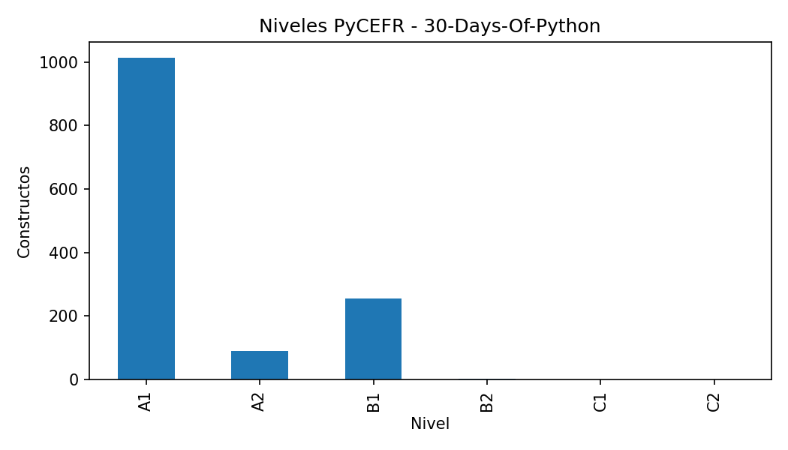
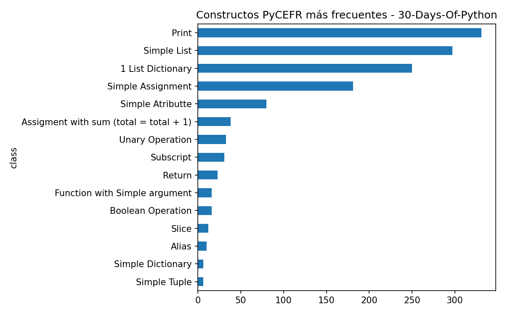
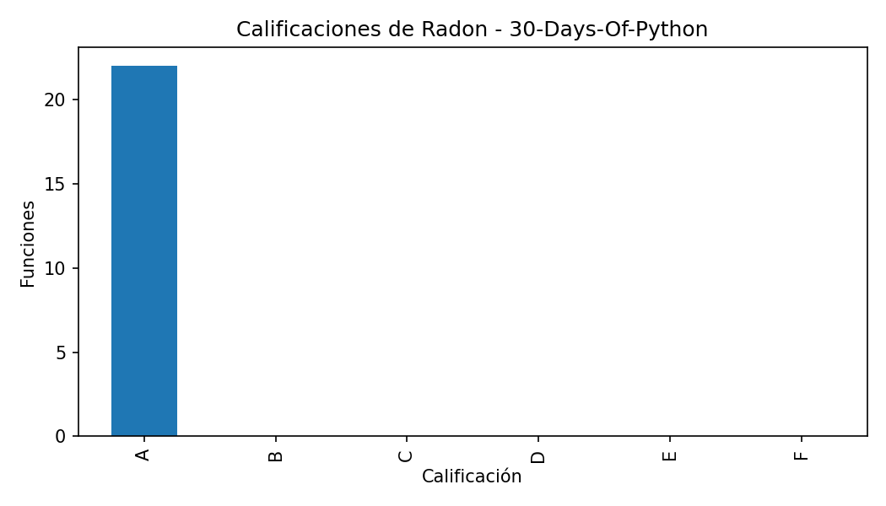
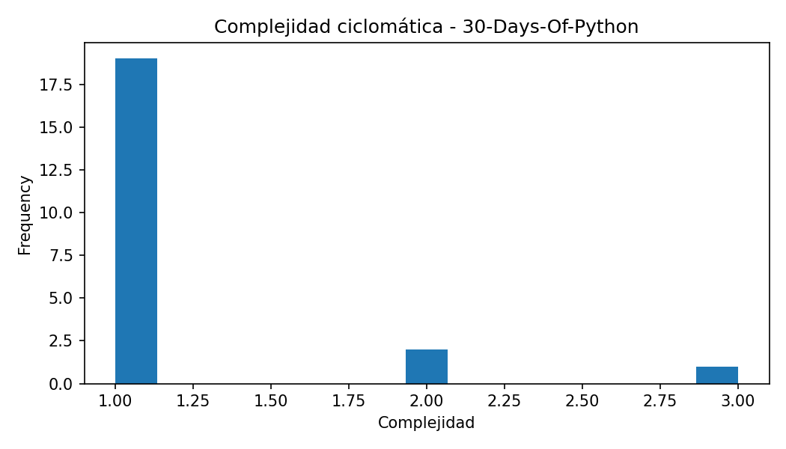
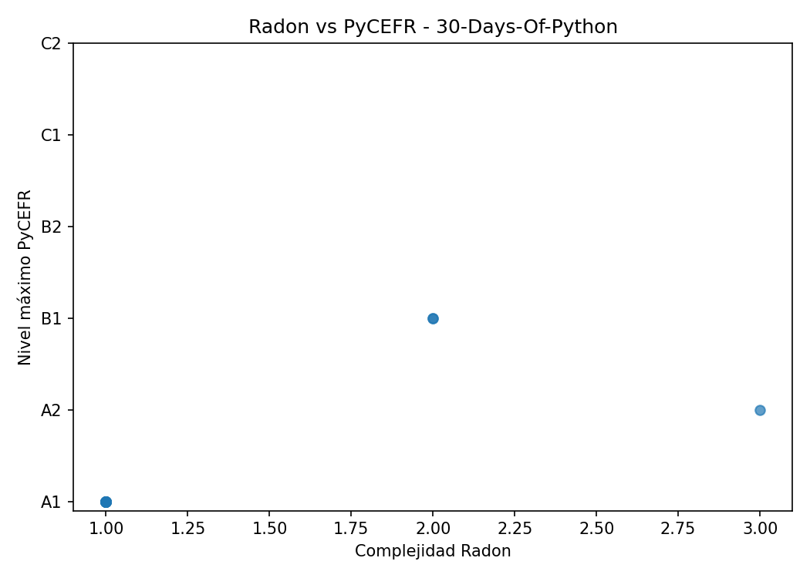

Constructos PyCEFR detectados: 1358
Clases PyCEFR distintas: 29
Nivel máximo PyCEFR: B2
Funciones Radon detectadas: 22
Complejidad máxima Radon: 3.0
Calificación máxima de Radon: A
Casos interesantes detectados: 0
En este caso no se han detectado grandes discrepancias automáticas con las reglas actuales. Aun así, puede ser útil revisar las funciones más complejas o los constructos de nivel más alto.
| class | count |
|---|---|
| 331 | |
| Simple List | 297 |
| 1 List Dictionary | 250 |
| Simple Assignment | 181 |
| Simple Atributte | 80 |
| Assigment with sum (total = total + 1) | 38 |
| Unary Operation | 33 |
| Subscript | 31 |
| Return | 23 |
| Function with Simple argument | 16 |
| file_name | name | complexity | radon_grade | lineno | endline |
|---|---|---|---|---|---|
| app.py | post | 3 | A | 29 | 35 |
| arithmetic.py | add_numbers | 2 | A | 1 | 5 |
| arithmetics.py | add_numbers | 2 | A | 1 | 5 |
| mymodule.py | generate_full_name | 1 | A | 1 | 4 |
| mymodule.py | sum_two_nums | 1 | A | 7 | 8 |
| mymodule.py | generate_full_name | 1 | A | 1 | 4 |
| arithmetic.py | subtract | 1 | A | 8 | 9 |
| mymodule.py | sum_two_nums | 1 | A | 6 | 7 |
| arithmetic.py | remainder | 1 | A | 20 | 21 |
| arithmetic.py | multiple | 1 | A | 12 | 13 |
No se han detectado casos destacados con las reglas actuales.





Este informe se genera automáticamente. Las conclusiones finales deben revisarse manualmente para comprobar que los ejemplos seleccionados son representativos y adecuados para la memoria.